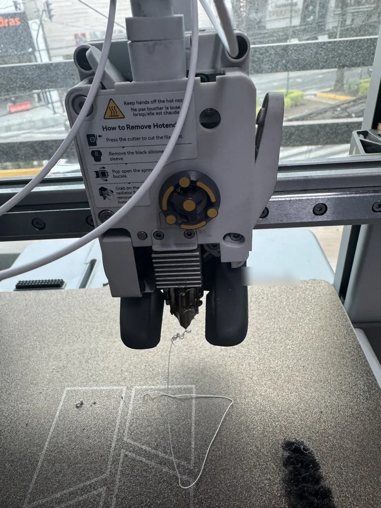
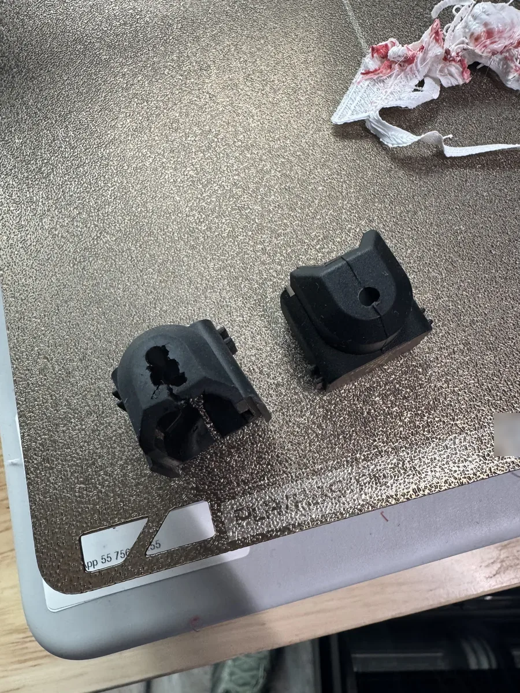
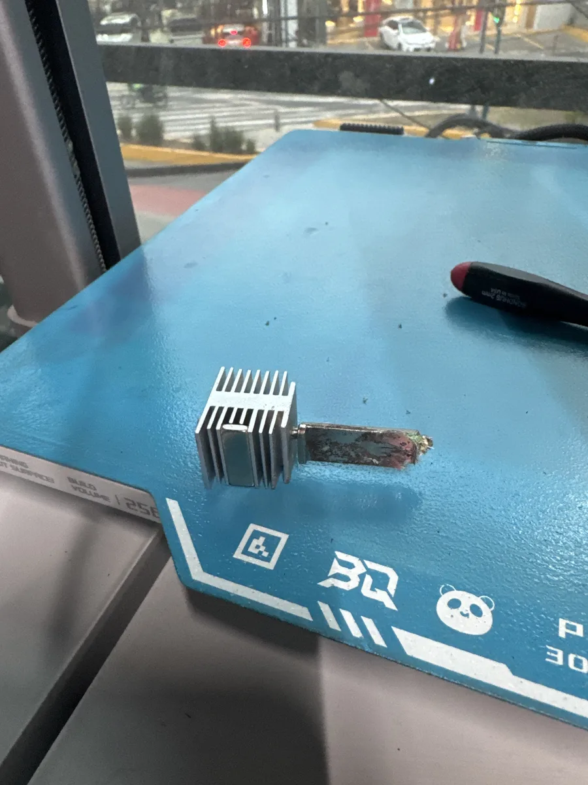
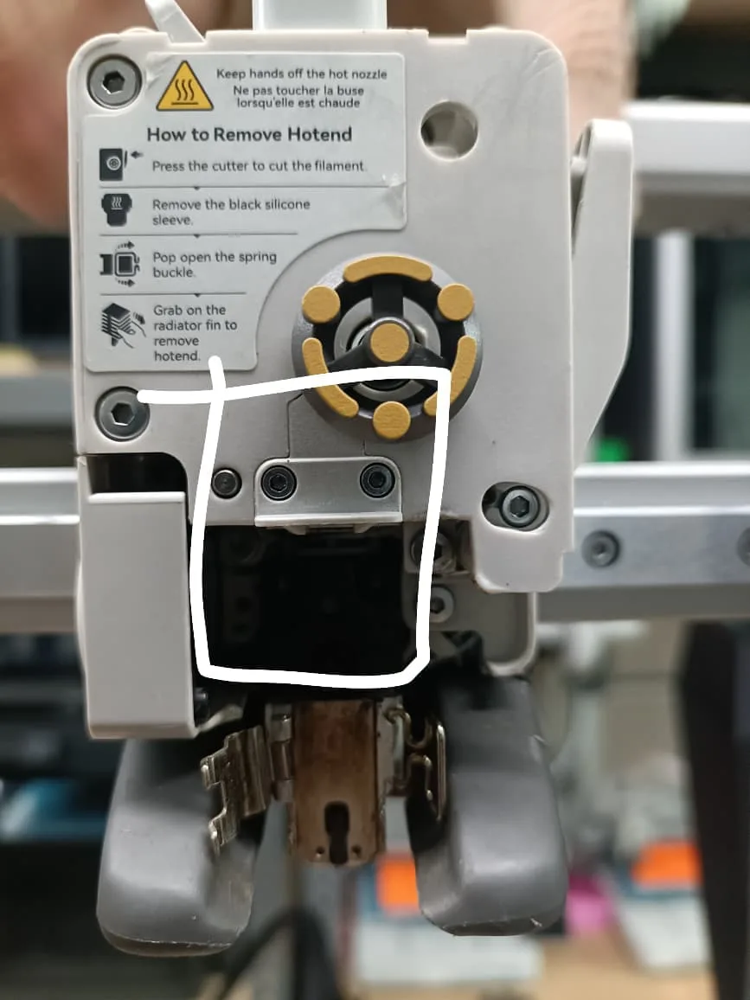
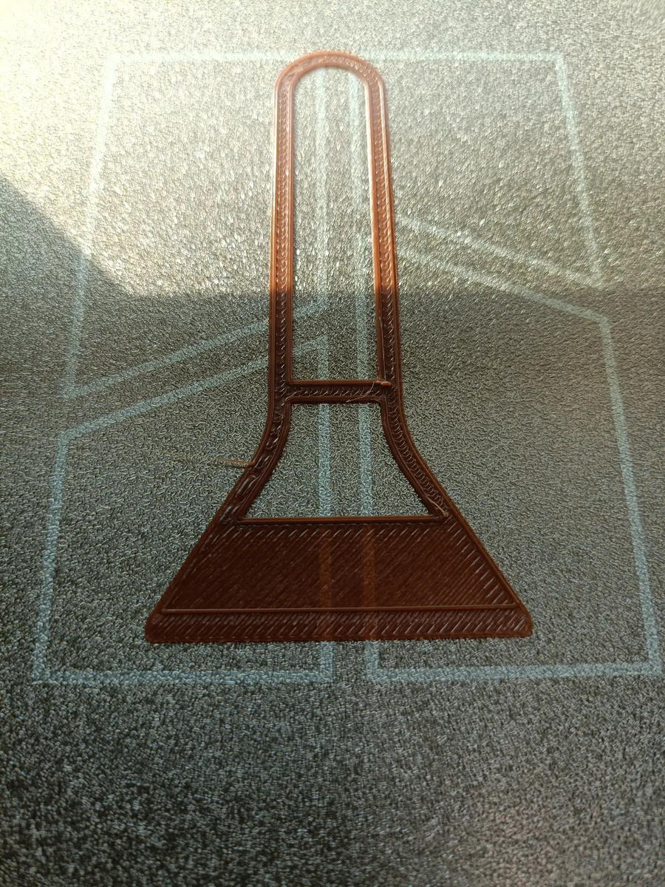
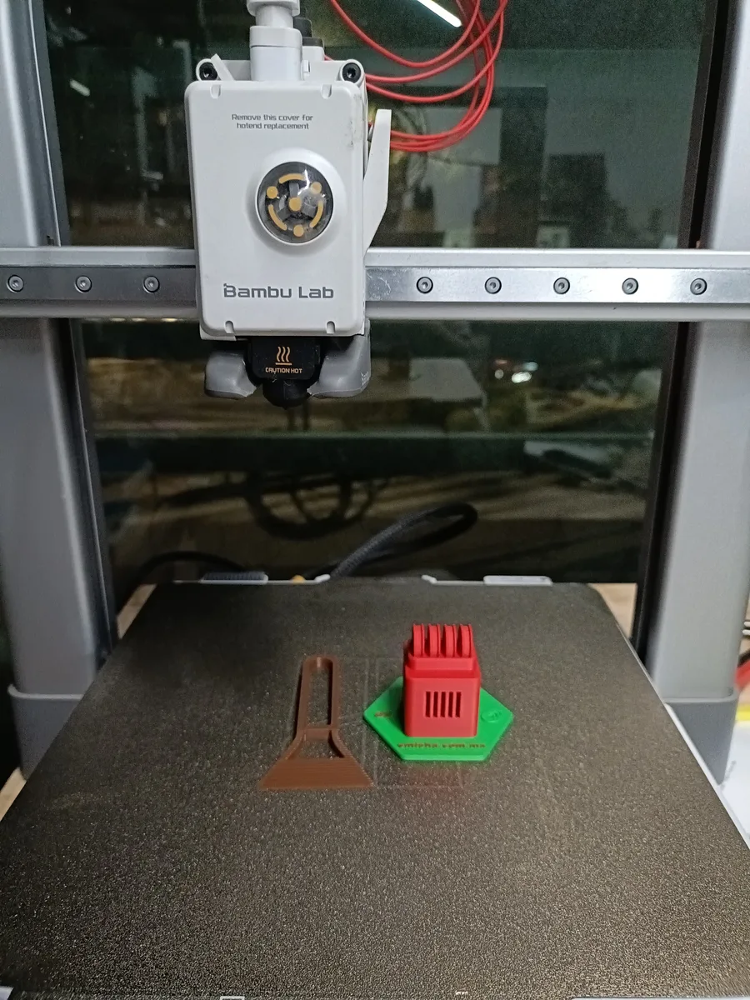
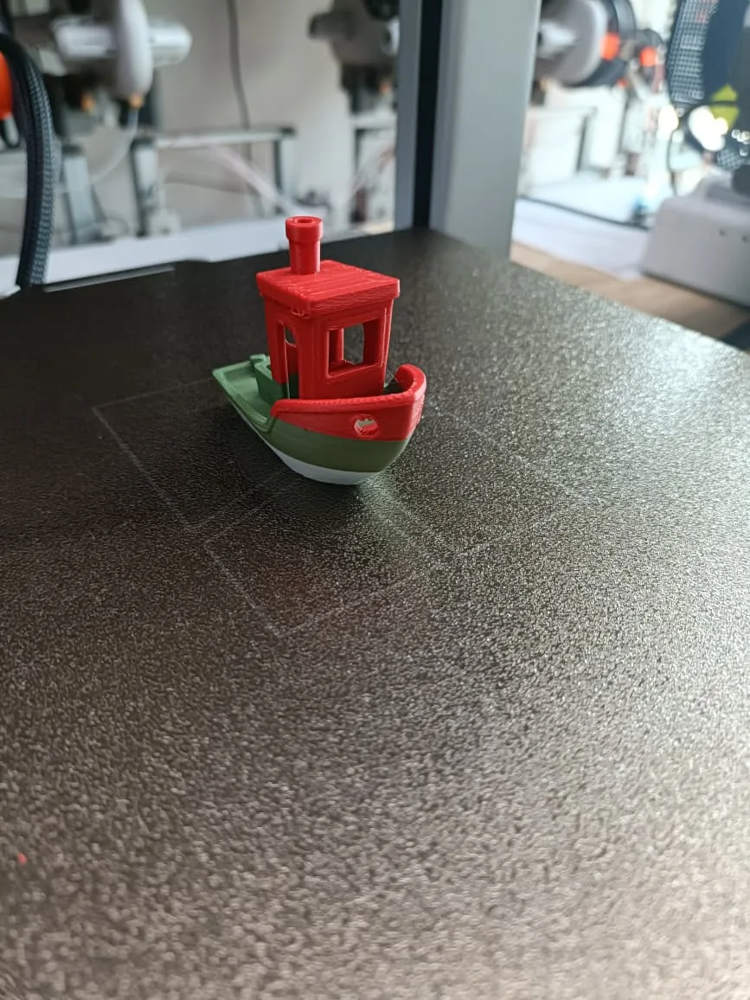

Tu A1 raspa la cama en la primera capa: lo que encontramos en el taller
· Caso del taller
La primera capa sale rugosa, la boquilla raya la placa o, al revés, imprime en el aire. Calibras otra vez y sigue igual. Nos llegaron dos A1 con esos síntomas y en ninguna de las dos el problema estaba en la cama. Estaba arriba, en el cabezal.

Lo que veían los dueños
La primera A1 llevaba meses así. Al imprimir la primera capa, la boquilla raspaba la placa o dejaba la superficie rugosa. En las piezas que sí terminaban, la primera capa quedaba desfasada del resto, como si la pieza empezara en un lugar y siguiera en otro.
La segunda tenía el síntoma contrario y el mismo a la vez. Aun después de calibrar, a veces imprimía rayando la placa y otras veces demasiado arriba, con el filamento sin pegar. Los dos dueños pensaban que era la nivelación.
Primer caso: el hotend se movía
La A1 mide la cama con la propia boquilla. Si el hotend no está firme, lo que mide en la calibración y la altura a la que imprime no coinciden. Eso fue lo que encontramos. Los tornillos que sujetan el ensamble de calentamiento del hotend estaban flojos, los de adelante y los de atrás. En las pruebas, la boquilla tenía movimientos de más.
El calcetín de silicón también estaba gastado, roto de un lado. Ese calcetín protege el bloque del calor y del filamento que se le pega. Sin él, el bloque junta residuos y la boquilla arrastra.

Un imán sin fuerza y daño por dentro
Al revisar el hotend fuera de la impresora vimos dos cosas más. El imán que lo mantiene en su lugar ya casi no tenía fuerza, así que el hotend no quedaba bien asentado y la boquilla terminaba tocando la placa. Además tenía daño interno, lo que provocaba mal flujo de filamento y atascos.
Con el imán débil y daño por dentro, apretar tornillos no basta. La solución fue ajustar la tornillería del cabezal, limpiar el extrusor y cambiar el hotend.

Segundo caso: la tapa del extrusor
En la otra A1 revisamos la boquilla y el extrusor completo. La tapa superior que va sobre el engrane, la que guía al filamento, tenía dos tornillos sueltos. Con la tapa floja, el filamento no queda bien sujeto. Al empezar a imprimir no bajaba de forma pareja y por eso la primera capa salía a veces apretada contra la placa y a veces sin material.
El engrane amarillo, el engrane metálico y los rodamientos estaban en buen estado. Apretamos la tapa, engrasamos de nuevo y limpiamos la boquilla y la placa metálica donde se asienta.

Cómo quedaron
Las dos pasaron por calibración completa y pruebas de impresión. La primera capa salió pareja y la boquilla dejó de tocar la placa.



Qué puedes revisar tú en casa
- Mueve la boquilla con la impresora fría. Con cuidado, intenta moverla con los dedos. No debe tener juego. Si se mueve, algo está flojo.
- Revisa el calcetín de silicón. Si está roto, endurecido o con filamento pegado, cámbialo. Es barato y protege el bloque.
- Revisa que el hotend quede asentado. Al cerrar el broche debe quedar firme, sin inclinarse.
- Limpia la placa. Agua con jabón para trastes, sin tocar la superficie con los dedos después. Mucho “problema de nivelación” es grasa.
- Corre la calibración completa. Después de cualquier cambio en el cabezal, no solo la nivelación rápida.
No aprietes tornillos a lo loco. Son pequeños y van en plástico o aluminio; si se barren, el problema crece.
Cuándo conviene traerla
Si la boquilla tiene juego y no ves de dónde, si el hotend no se sostiene firme al cerrarlo, o si ya limpiaste y calibraste y la primera capa sigue cambiando de una impresión a otra, tráela. En el taller la revisamos completa, te mandamos fotos de lo que encontramos y la cotización antes de cambiar cualquier pieza.
Sigue leyendo
¿Tu impresora tiene algo parecido?
Diagnóstico en el taller con fotos de lo que encontramos y la cotización antes de cambiar cualquier pieza. Recibimos impresoras de todo México por paquetería.